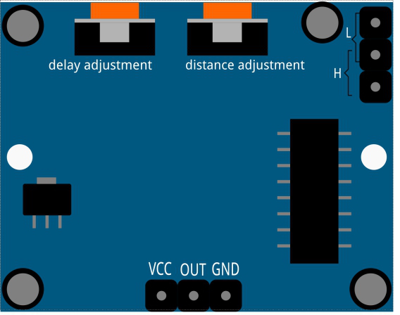

Nota
¡Hola! Bienvenido a la Comunidad de Entusiastas de Raspberry Pi, Arduino y ESP32 de SunFounder en Facebook. Únete para profundizar tus conocimientos sobre Raspberry Pi, Arduino y ESP32 junto a otros entusiastas.
¿Por qué unirse?
Soporte Experto: Resuelve problemas postventa y desafíos técnicos con la ayuda de nuestra comunidad y equipo.
Aprende y Comparte: Intercambia consejos y tutoriales para mejorar tus habilidades.
Vistas Exclusivas: Obtén acceso anticipado a anuncios de nuevos productos y avances exclusivos.
Descuentos Especiales: Disfruta de descuentos exclusivos en nuestros productos más nuevos.
Promociones y Sorteos Festivos: Participa en sorteos y promociones especiales por festividades.
üëâ ¬øListo para explorar y crear con nosotros? Haz clic en [Aqu√≠] y únete hoy.
2.2.4 PIR
Introducción
En este proyecto, vamos a crear un dispositivo utilizando sensores infrarrojos piroeléctricos para detectar el cuerpo humano. Cuando alguien se acerque al LED, este se encenderá automáticamente. En caso contrario, la luz se apagará. Este sensor de movimiento infrarrojo puede detectar la radiación infrarroja emitida por humanos y animales.
Componentes

Principio
El sensor PIR detecta la radiación infrarroja que puede usarse para identificar la presencia de organismos que emiten radiación infrarroja.
El sensor PIR está dividido en dos ranuras conectadas a un amplificador diferencial. Cuando un objeto estático está frente al sensor, las dos ranuras reciben la misma cantidad de radiación y la salida es cero. Cuando un objeto en movimiento pasa frente al sensor, una de las ranuras recibe más radiación que la otra, haciendo que la salida fluctúe entre niveles altos y bajos. Este cambio de voltaje de salida indica la detección de movimiento.

Después de conectar el módulo sensor, se realiza una inicialización de un minuto. Durante este tiempo, el módulo puede activar la salida de 0 a 3 veces en intervalos. Luego, el módulo entra en modo de espera. Es importante evitar fuentes de luz y otras interferencias cerca del sensor para reducir la posibilidad de falsas alarmas. También se recomienda usar el módulo en un ambiente sin mucho viento, ya que el viento también puede interferir con el sensor.
{kind=link}
Ajuste de Distancia
Girando el potenciómetro de ajuste de distancia en el sentido de las agujas del reloj, el rango de detección aumenta, alcanzando una distancia máxima de aproximadamente 0 a 7 metros. Si se gira en sentido contrario, el rango de detección se reduce, alcanzando un mínimo de alrededor de 0 a 3 metros.
Ajuste de Retardo
Al girar el potenciómetro de ajuste de retardo en el sentido de las agujas del reloj, también se incrementa el retardo de detección, que puede llegar hasta 300 segundos. En sentido contrario, se acorta el retardo hasta un mínimo de 5 segundos.
Dos modos de disparo: (para seleccionar el modo se usa el jumper).
H: Modo de disparo repetible. Después de detectar el cuerpo humano,
el módulo emite una señal de alto nivel. Si alguien permanece en el rango de detección, la salida se mantendrá en alto.
L: Modo de disparo no repetible. Emitirá una señal de alto nivel al
detectar el cuerpo humano. Después del retardo, la salida cambiará automáticamente de alto a bajo.
Diagrama Esquemático

Procedimiento Experimental
Paso 1: Construye el circuito.

Para Usuarios de Lenguaje C
Paso 2: Ve a la carpeta del código.
cd ~/davinci-kit-for-raspberry-pi/c/2.2.4/
Paso 3: Compila el código.
gcc 2.2.4_PIR.c -lwiringPi
Paso 4: Ejecuta el archivo.
sudo ./a.out
Una vez ejecutado el código, el PIR detectará los alrededores y hará que el LED RGB se ilumine en amarillo si detecta a alguien pasando cerca. En el módulo PIR hay dos potenciómetros: uno para ajustar la sensibilidad y otro para ajustar la distancia de detección. Para un funcionamiento óptimo, gira ambos completamente en sentido antihorario.

Nota
Si no funciona después de ejecutar el código, o aparece el mensaje de error: "wiringPi.h: No such file or directory», consulta la referencia c code is not working?.
Código
#include <wiringPi.h>
#include <softPwm.h>
#include <stdio.h>
#define uchar unsigned char
#define pirPin 0 // el PIR se conecta al GPIO0
#define redPin 1
#define greenPin 2
#define bluePin 3
void ledInit(void){
softPwmCreate(redPin, 0, 100);
softPwmCreate(greenPin,0, 100);
softPwmCreate(bluePin, 0, 100);
}
void ledColorSet(uchar r_val, uchar g_val, uchar b_val){
softPwmWrite(redPin, r_val);
softPwmWrite(greenPin, g_val);
softPwmWrite(bluePin, b_val);
}
int main(void)
{
int pir_val;
if(wiringPiSetup() == -1){ //cuando la inicialización falla, imprime mensaje en pantalla
printf("setup wiringPi failed !");
return 1;
}
ledInit();
pinMode(pirPin, INPUT);
while(1){
pir_val = digitalRead(pirPin);
if(pir_val == 1){ // si se lee un nivel ALTO del PIR
ledColorSet(0xff,0xff,0x00);
}
else {
ledColorSet(0x00,0x00,0xff);
}
}
return 0;
}
Explicación del Código
void ledInit(void);
void ledColorSet(uchar r_val, uchar g_val, uchar b_val);
Estas funciones se utilizan para configurar el color del LED RGB. Para obtener más detalles, consulte 1.1.2 RGB LED.
int main(void)
{
int pir_val;
//……
pinMode(pirPin, INPUT);
while(1){
pir_val = digitalRead(pirPin);
if(pir_val == 1){ // si se lee un nivel ALTO del PIR
ledColorSet(0xff,0xff,0x00);
}
else {
ledColorSet(0x00,0x00,0xff);
}
}
return 0;
}
Cuando el sensor PIR detecta el espectro infrarrojo humano, el LED RGB emite luz amarilla; en caso contrario, emite luz azul.
Para Usuarios de Python
Paso 2: Ve a la carpeta del código.
cd ~/davinci-kit-for-raspberry-pi/python/
Paso 3: Ejecuta el archivo ejecutable.
sudo python3 2.2.4_PIR.py
Después de ejecutar el código, el PIR detectará el entorno y hará que el LED RGB brille en amarillo si detecta a alguien pasando cerca. Hay dos potenciómetros en el módulo PIR: uno para ajustar la sensibilidad y otro para ajustar la distancia de detección. Para que el módulo PIR funcione mejor, es recomendable girarlos ambos completamente en sentido antihorario.
Código
Nota
Puedes Modificar/Restablecer/Copiar/Ejecutar/Detener el código a continuación. Pero antes, debes ir a la ruta del código fuente como davinci-kit-for-raspberry-pi/python.
import RPi.GPIO as GPIO
import time
rgbPins = {'Red':18, 'Green':27, 'Blue':22}
pirPin = 17 # el sensor pir conectado al pin 17
def setup():
global p_R, p_G, p_B
GPIO.setmode(GPIO.BCM) # Configura el modo GPIO en numeración BCM
GPIO.setup(pirPin, GPIO.IN) # Configura pirPin como entrada
# Configura todos los pines de LED como salida y nivel inicial Alto (3.3v)
for i in rgbPins:
GPIO.setup(rgbPins[i], GPIO.OUT, initial=GPIO.HIGH)
# Configura todos los LEDs como canales PWM y frecuencia a 2KHz
p_R = GPIO.PWM(rgbPins['Red'], 2000)
p_G = GPIO.PWM(rgbPins['Green'], 2000)
p_B = GPIO.PWM(rgbPins['Blue'], 2000)
# Establece todos con valor inicial de 0
p_R.start(0)
p_G.start(0)
p_B.start(0)
# Define una función MAP para mapear valores, por ejemplo, de 0~255 a 0~100
def MAP(x, in_min, in_max, out_min, out_max):
return (x - in_min) * (out_max - out_min) / (in_max - in_min) + out_min
# Define una función para configurar colores
def setColor(color):
# configura el brillo de los tres LEDs con el valor de color ingresado.
# Divide los valores de color de la variable 'color'
R_val = (color & 0xFF0000) >> 16
G_val = (color & 0x00FF00) >> 8
B_val = (color & 0x0000FF) >> 0
# Mapea el valor de color de 0~255 a 0~100
R_val = MAP(R_val, 0, 255, 0, 100)
G_val = MAP(G_val, 0, 255, 0, 100)
B_val = MAP(B_val, 0, 255, 0, 100)
# Asigna el valor de ciclo de trabajo mapeado al canal PWM correspondiente para cambiar el brillo.
p_R.ChangeDutyCycle(R_val)
p_G.ChangeDutyCycle(G_val)
p_B.ChangeDutyCycle(B_val)
def loop():
while True:
pir_val = GPIO.input(pirPin)
if pir_val==GPIO.HIGH:
setColor(0xFFFF00) # Amarillo
else :
setColor(0x0000FF) # Azul
def destroy():
p_R.stop()
p_G.stop()
p_B.stop()
GPIO.cleanup() # Libera los recursos
if __name__ == '__main__': # Programa comienza aquí
setup()
try:
loop()
except KeyboardInterrupt: # Cuando se presiona 'Ctrl+C', se ejecuta la función destroy()
destroy()
Explicación del Código
rgbPins = {'Red':18, 'Green':27, 'Blue':22}
def setup():
global p_R, p_G, p_B
GPIO.setmode(GPIO.BCM)
# ……
for i in rgbPins:
GPIO.setup(rgbPins[i], GPIO.OUT, initial=GPIO.HIGH)
p_R = GPIO.PWM(rgbPins['Red'], 2000)
p_G = GPIO.PWM(rgbPins['Green'], 2000)
p_B = GPIO.PWM(rgbPins['Blue'], 2000)
p_R.start(0)
p_G.start(0)
p_B.start(0)
def MAP(x, in_min, in_max, out_min, out_max):
return (x - in_min) * (out_max - out_min) / (in_max - in_min) + out_min
def setColor(color):
...
Estos códigos se utilizan para configurar el color del LED RGB. Para obtener más detalles, consulte 1.1.2 RGB LED.
def loop():
while True:
pir_val = GPIO.input(pirPin)
if pir_val==GPIO.HIGH:
setColor(0xFFFF00) # Amarillo
else :
setColor(0x0000FF) # Azul
Cuando el sensor PIR detecta el espectro infrarrojo humano, el LED RGB emite luz amarilla; si no, emite luz azul.